7.6. Developing Course Components#
This section describes how you develop course components.
For more information about specific component types, see the following topics.
7.6.1. What is a Component?#
A component is the part of a unit that contains your actual course content. A unit can contain one or more components.
By default, Studio includes four basic types of components for you to add to your course.
Discussion components provide discussion spaces in the body of your course. Learners can explore ideas about a lesson with their peers in a discussion space.
Text components allow you to add text, images, and some types of learning tools to your course. Content in Text components is formatted as HTML.
Problem components enable you to add many different types of exercises and problems to your course, from simple single select problems to complex circuit schematic exercises.
Video components contain the videos that you want to include in your course.
7.6.2. Add a Component#
To add a component to the unit, follow these steps.
In Studio, open the page for the unit.
Under Add New Component, select a component type. The default component types are discussion, HTML, problem, and video.
For more information, see the documentation for the specific component type that you want to work with.
After you add a component, it is not visible to learners until you publish the unit.
7.6.3. Edit a Component#
To edit a component, you select Edit in the component’s title bar in Studio.
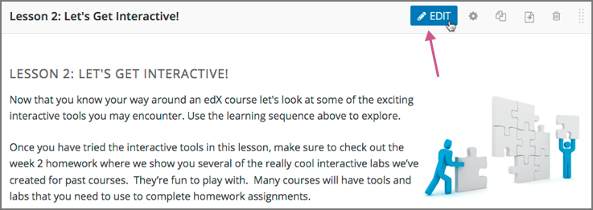{kind=link}
Then, follow instructions for the type of component you are editing.
After you edit a component, the changes are not visible to learners until you publish the unit.
7.6.3.1. Set the Display Name for a Component#
The display name identifies the component. This name appears as a heading above the component in the LMS, and it identifies the component for you in Insights.
The following illustration shows the display name of a problem in Studio, in the LMS, and in Insights.

Unique, descriptive display names help you and your learners identify components quickly and accurately.
To set the display name for a component, follow these steps.
Edit the component. A dialog box opens.
For a discussion or video component, the dialog box opens to the list of settings, including the Display Name field.
For an HTML or problem component, the dialog box opens to an editing view. Select Settings to show the list of settings, including the Display Name field.
Edit the Display Name field.
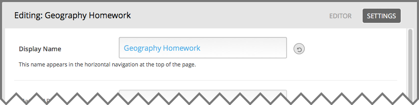Select Save.
{kind=link}
Different types of components have different fields in the Settings dialog box, but all of them have a Display Name field.
7.6.4. Set Access Restrictions for a Component#
If you have more than one enrollment track in your course, or if you have enabled cohorts, you can limit a component’s availability to specific groups of learners. For information about offering different content to different learner groups, see Offering Different Content to Different Learner Groups.
Note
Components inherit any group access restrictions that are set for their parent unit. If you set additional group access restrictions for a component, make sure the component access settings do not contradict the unit access settings. For example, you cannot give Group A of learners access to a component if Group A does not have access to the unit that contains the component.
To specify a component’s access settings, follow these steps.
In Studio, select Content, and then select Outline.
On a unit page, for each component for which you want to restrict access to, select the Access Settings icon.
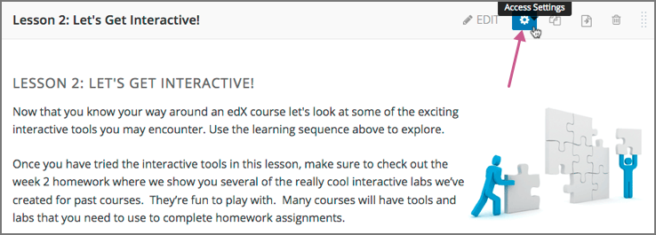In the Editing access dialog box, for the Restrict access to option, select the group type by which you want to restrict access.
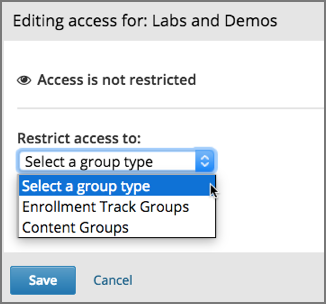Note
The Enrollment Track Groups option is available only if your course has more than one enrollment track. The Content Groups option is available only if you have created content groups for use with cohorts.
After you have selected a group type, you see a list of the groups that exist for that group type.
Select the checkbox for each group for which you want the current component to be available.
Select Save.
The groups which have access to the component are listed under the component title in the Studio course outline.
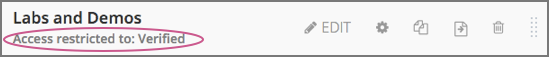In addition, on the unit page in Studio, a message in the publishing status bar indicates that some content in the unit is restricted to specific groups of learners.
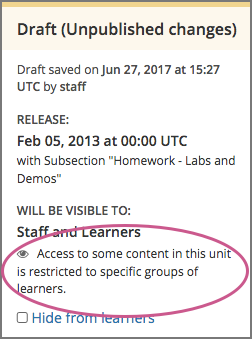
{kind=link}
{kind=link}
{kind=link}
{kind=link}
7.6.5. Duplicate a Component#
When you duplicate a component, a new copy of that component is added directly beneath the first component. You can then modify the duplicate. In many cases, duplicating a component and editing the copy is a faster way to create new content.
To duplicate a component, select the Duplicate icon in the component header.
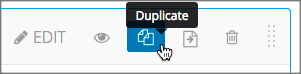Then, follow instructions for the type of component you are editing.
After you duplicate a component, the new component is not visible to learners until you publish the unit.
Note
Duplicating content experiments after you have configured them is not supported.
7.6.6. Delete a Component#
Caution
Be sure you want to delete the component. You cannot undo the deletion.
To delete a component, follow these steps.
Select the Delete icon in the component header.
When you receive the confirmation prompt, select Yes, delete this component.
After you delete a component in Studio, the component remains visible to learners until you publish the unit.
7.6.7. Reorganizing Components#
You can drag and drop components to a new position within their current unit, or you can move components from one unit to another unit.
7.6.7.1. Reorganize Components Within a Unit#
To reorganize components within their current unit, you drag and drop components in the same way that you can drag and drop units, subsections, and sections on the Course Outline page. For more information, see Reorganize the Course Outline.
For components that consist of nested components (for example, a content experiment), you can also use drag and drop to move a child component into a different parent component, if both parents are expanded. For example, you can select the video component that is in Child Component A and drag it into Child Component B. Select the video component, and as you drag it into Child Component B, release the mouse button when a dashed outline of the component you are moving appears in the new location.
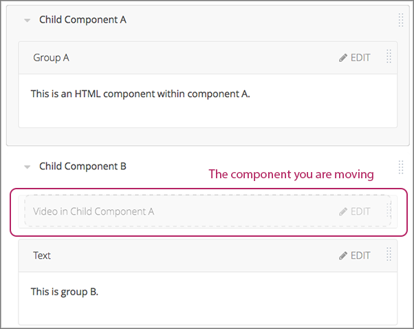{kind=link}
You can also drag a child component outside of a parent, so that the child moves to the same level as the parent.
7.6.7.2. Move Components to Other Units#
To move components to another unit in the course outline, follow these steps.
Select the Move icon for the component that you want to move.
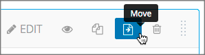A dialog box appears that displays your course outline tree, starting at the section level.
In the Move dialog box, navigate to the location where you want to move the component by selecting the section, the subsection, and then the unit.
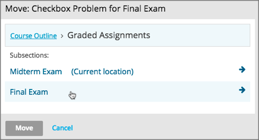The Move button is enabled only when your selected location is a valid level and location for moving your component. For example, when you move a component, the Move button is enabled only when you have navigated to a unit to which the component can be moved.
Select Move.
The component moves to the new location. A success message appears that provides options to go to the new location or to undo the move.
Note
If the old and new locations of the component that you moved were previously published, your changes are not reflected in the learner’s view of the course until you republish the affected units.
{kind=link}
7.6.8. Components that Contain Other Components#
For specific use cases, you configure course content so that components contain other components. For example, if you want to include conditional components or content experiments, you have to create components inside components. See Creating Content Experiments for more information.
The component that contains other components is referred to as the parent; the contained components are referred to as child components, or children.
On a unit page, a parent component appears with its display name and a View link.
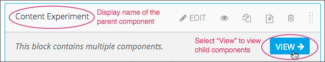{kind=link}
7.6.8.1. Edit a Parent Component#
A parent component does not directly contain content. Content such as HTML, videos, or problems are in the child components.
A parent component has a display name. When the unit is private or in draft, select Edit in the parent component to change the display name.
Note
Parent components of a specific type, such as content experiments, have additional attributes that you edit.
7.6.8.2. View Child Components#
When you select View in the parent component, the parent component page opens, showing all child components. In this example, Child Component A contains a Text component and a video.
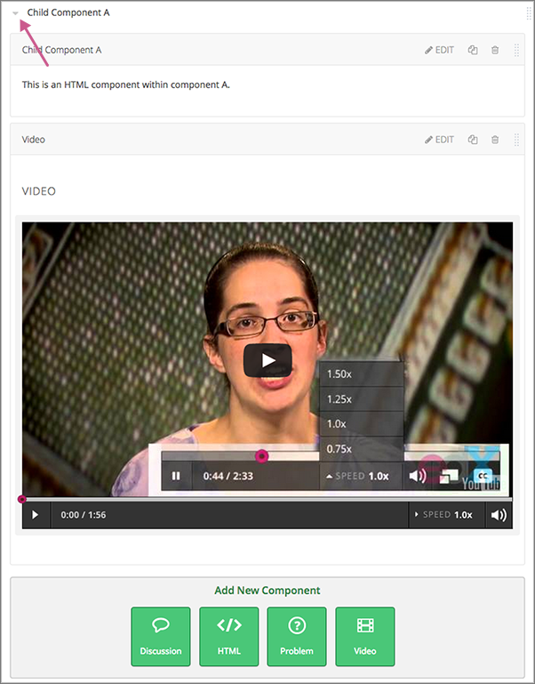{kind=link}
Select the arrow next to a child component name to collapse it and hide the component’s contents. Select the arrow again to expand the component.
For more information, see the following topics.
7.6.8.3. Add a Child Component#
If the containing unit is private or in draft, you can add a child component in its parent component.
To add a child component, open and expand the parent component. Then, select the component type that you want under Add New Component within the parent component.
For more information, see the section for the specific component type that you want.
7.6.8.4. XML for Parent and Child Components#
You develop parent and child components in XML, then import the XML course into Studio to verify that the structure is as you intended.
For more information about working with your course’s XML files, including information about terminology, see the EdX Open Learning XML Guide.
The following examples show the XML used to create the unit and components shown in Studio above.
The XML for the unit is as follows.
<vertical display_name="Unit 1">
<html url_name="6a5cf0ea41a54b209e0815147896d1b2"/>
<vertical url_name="131a499ddaa3474194c1aa2eced34455"/>
</vertical>
The <vertical url_name="131a499ddaa3474194c1aa2eced34455"/> element above
references the parent component file that contains the child components.
<vertical display_name="Parent Component">
<vertical url_name="2758bbc495dd40d59050da15b40bd9a5"/>
<vertical url_name="c5c8b27c2c5546e784432f3b2b6cf2ea"/>
</vertical>
The two verticals referenced by the parent component refer to the child components, which contain the actual content of your course.
<vertical display_name="Child Component A">
<html url_name="4471618afafb45bfb86cbe511973e225"/>
<video url_name="fbd800d0bdbd4cb69ac70c47c9f699e1"/>
</vertical>
<vertical display_name="Child Component B">
<html url_name="dd6ef295fda74a639842e1a49c66b2c7"/>
<problem url_name="b40ecbe4ed1b4280ae93e2a158edae6f"/>
</vertical>
Theoretically, there is no limit to the levels of component nesting you can use in your course.
7.6.8.5. The Learner View of Nested Components#
For learners, all parent and child components appear on the unit page.
Note
The visibility of nested components depends on the visibility of the parent unit. The parent unit must be public for learners to see nested components. For more information, see Unit Publishing Status and Visibility to Learners.
The following example shows the learner view of the unit described above.
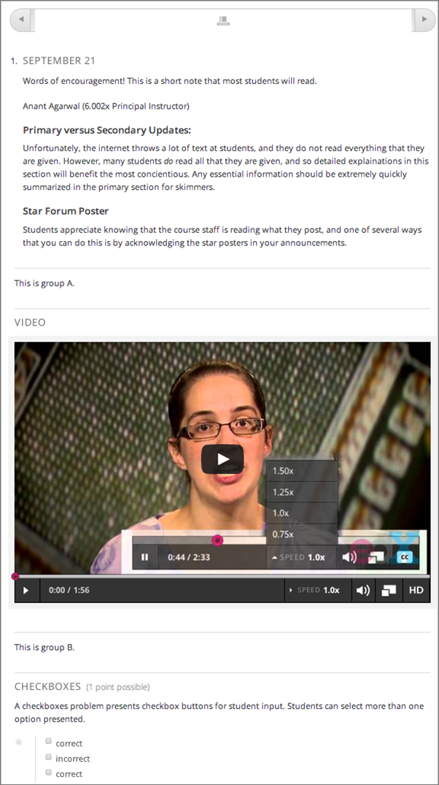{kind=link}